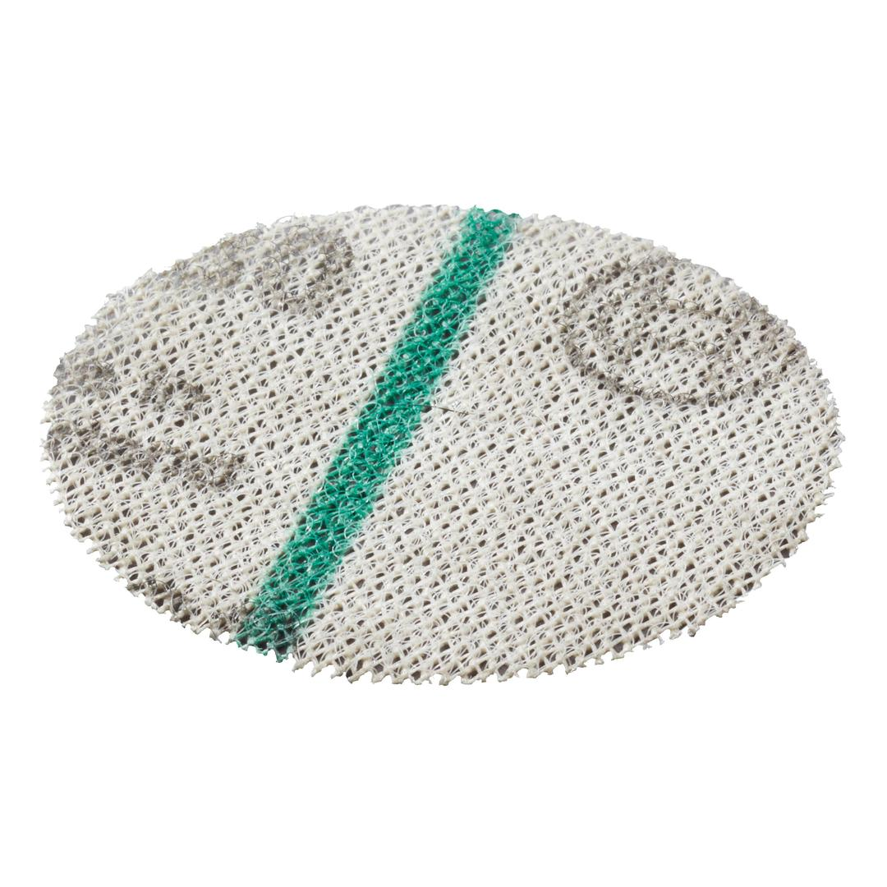

2608621717

| Product text, Accessories green |
Suitable for sanding wood, paint, varnish, roughcast and solid surface materials Premium abrasives with open net structure enables full surface extraction of the sanding dust Design encourages minimal clogging for clean surface results without material build up which enhances lifetime of the abrasive Appropriate for EasyCurveSander12 backing pads. |
| Pack quantity |
12 Pcs |
| Minimum order quantity |
10 Pcs |